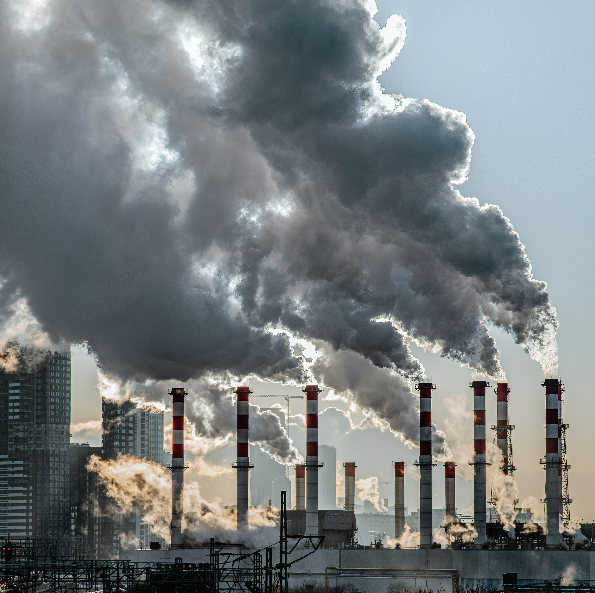
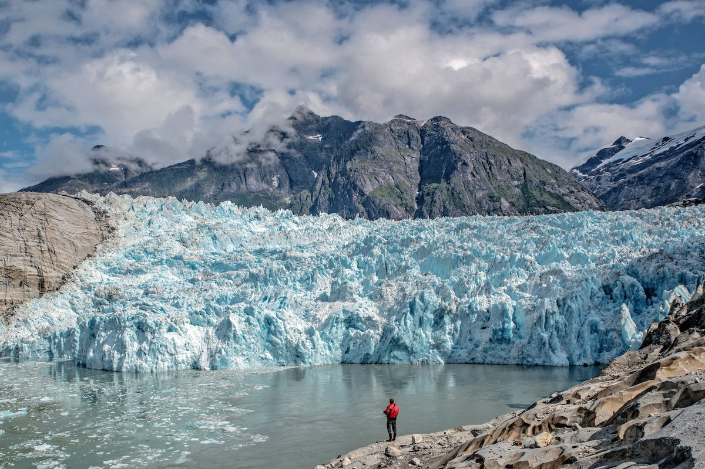
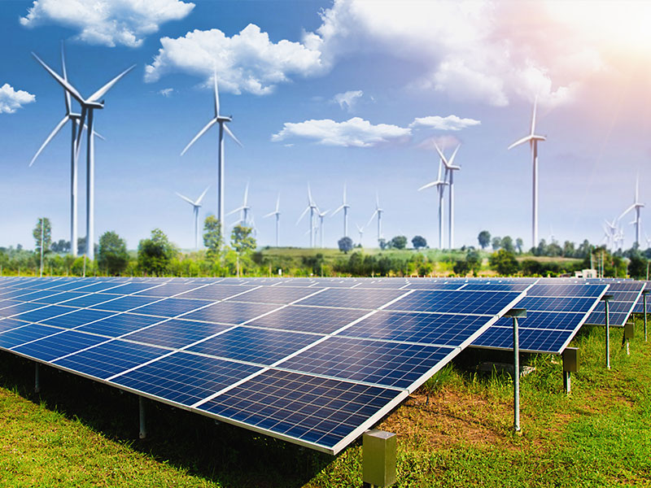

¿Qué es y cuáles son sus causas?
El cambio climático es la variación a largo plazo de las temperaturas y los patrones del clima. Se intensifica por el efecto invernadero: gases como el dióxido de carbono y el metano retienen el calor del Sol en la atmósfera. Las actividades humanas aumentan la cantidad de estos gases y, con ello, el calentamiento del planeta.
- Quema de combustibles fósiles (petróleo, carbón y gas).
- Deforestación y tala de bosques.
- Agricultura y ganadería intensivas.
- Producción excesiva de residuos e industria contaminante.
Desde la Revolución Industrial, la concentración de dióxido de carbono en la atmósfera ha crecido de forma constante. Los bosques, que absorben parte de ese gas, se reducen cada año, por lo que el problema se agrava por dos lados: se emite más y se absorbe menos.
Aunque el clima de la Tierra siempre ha cambiado de manera natural, los científicos coinciden en que el ritmo actual es mucho más rápido y que la principal responsable es la actividad humana.

Consecuencias globales
El calentamiento del planeta no es un problema lejano: sus efectos ya se sienten en todos los continentes y afectan a las personas, a los animales y a la economía. Estos son los impactos más importantes:
- Aumento de la temperatura media del planeta.
- Derretimiento de glaciares y casquetes polares.
- Subida del nivel del mar.
- Sequías, incendios e inundaciones más frecuentes.
- Pérdida de biodiversidad.
- Escasez de agua y alimentos en las regiones más vulnerables.
- Migraciones de personas que deben abandonar sus hogares.
Los países con menos recursos suelen ser los más golpeados, aunque sean los que menos contribuyeron al problema. Por eso se habla de una cuestión de justicia climática además de ambiental.

Acciones y soluciones
Frenar el cambio climático es posible si actuamos en tres niveles al mismo tiempo. Los pequeños hábitos diarios, los proyectos de la comunidad y las decisiones de los gobiernos se complementan y multiplican su efecto.
| Nivel | Acción | Impacto |
|---|---|---|
| Individual | Separar residuos | Menos contaminación |
| Comunitario | Plantar árboles | Protección ambiental |
| Global | Usar energías renovables | Menos emisiones |
Otras acciones sencillas son ahorrar energía en casa, preferir el transporte público o la bicicleta, reducir el consumo de carne y reutilizar los objetos antes de tirarlos.

Sumate al cambio
Cada persona puede ser parte de la solución. Suscribite para recibir novedades, consejos prácticos y propuestas de actividades para cuidar el ambiente desde tu casa, tu escuela o tu barrio.